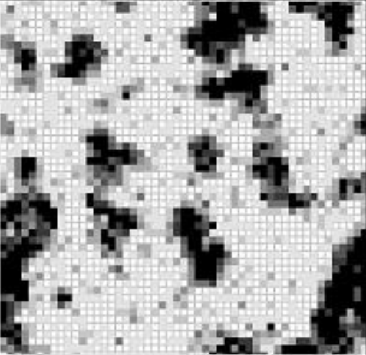
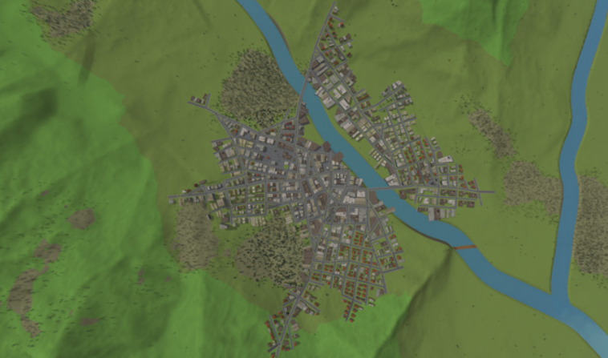
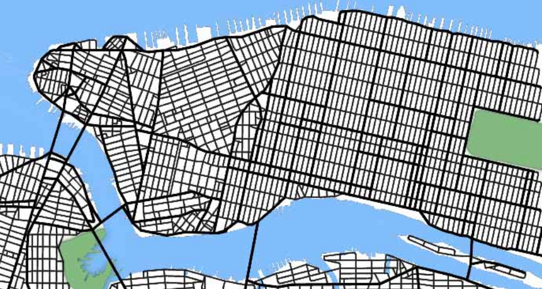
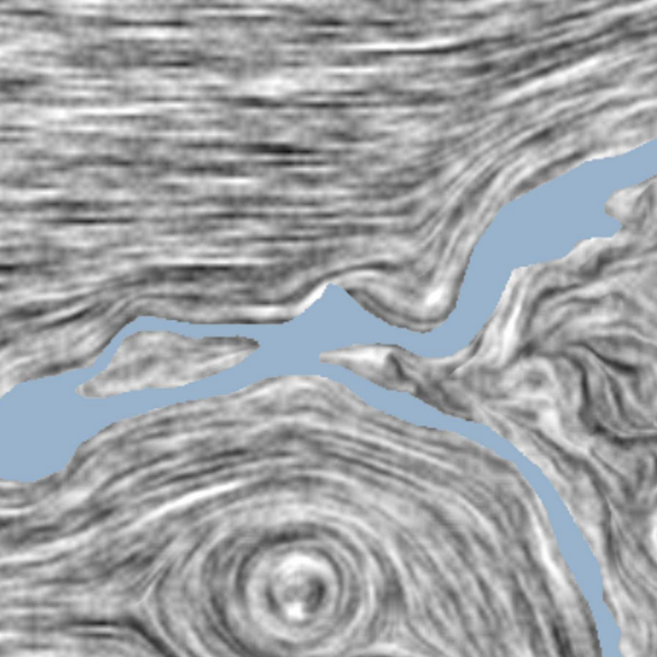
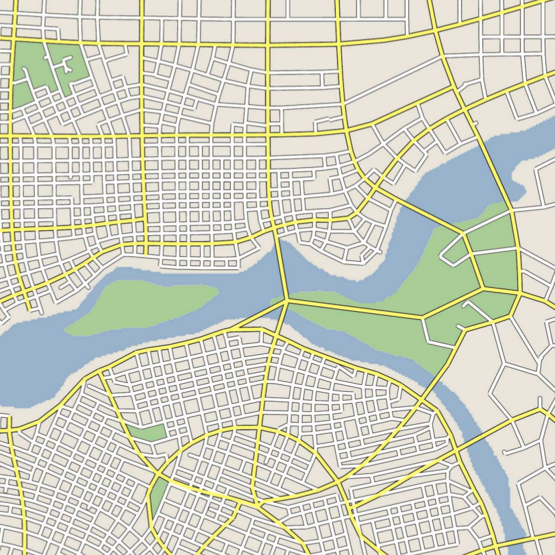

Morphogenèse urbaine
coévolution du réseau viaire et du bâti
Merwan Achibet
Université du Havre
28 juin 2012

Plan
-
État de l'art
- Automates cellulaires
- Systèmes multi-agents
- Méthodes procédurales
-
Le modèle
- Structure
- Potentialité
- Trois mécanismes
-
Démonstration
État de l'art
Automates cellulaires
Principe
Exemple : le jeu de la vie de Conway
Exemple géographique : la ségrégation de Schelling
Dans le cadre des simulations urbaines
Une cellule représente un sous-espace géographique.
Une cellule dispose d'un état.
- Booléen (vide/construit)
- Type d'usage (résidentiel, commercial, industriel, ...)
Une cellule a un potentiel de transition vers tous les états.
- Déterministe
- Stochastique
Exemple cellulaire 1

Lucien Benguigui, Daniel Czalanski et Rafael Roth. "Modeling
cities in 3D: a cellular automaton approach". Dans
: Environment and Planning B: Planning and Design 3
(2004).
Exemple cellulaire 2

Edwige Dubos-Paillard, Yves Guermond et Patrice
Langlois. "Analyse de l'évolution urbaine par automate
cellulaire : le modèle SpaCelle". Dans L'Espace
Géographique 32 (2003).
Limitations des automates cellulaires
La rigidité de leur formalisme s'oppose à la fidélité des simulations.
- Discrétisation des états
- Synchronisme temporel
- Homogénéité et régularité
Relaxation de la régularité
Généralisation : automates cellulaires graphes.

David O'Sullivan. "Graph-based Cellular Automaton Models of
Urban Spatial Processes". Thèse de doct. Bartlett School of
Architecture and Planning, University College London, 2000.
Autre limitation : la représentation du réseau viaire
- La connaissance du réseau routier est essentielle
- Il est souvent fourni en entrée...
- ... Mais demeure statique
- Inadapté à l'automate cellulaire
Exemple multi-agent 1
- Agents promoteurs : achètent, vendent, changent le
type
- Agents traceurs : raccordent les parcelles au réseau
routier

Tom Lechner, Seth Tisue et Andy Moddrell, Procedural
Modeling of Urban Land Use. Department of Computer
Science, North Carolina State Université, 2007.
Défaut : pas de cohérence historique
- La configuration de départ est valide
- La configuration d'arrivée est valide
- Les configurations intermédiaires sont erronées


Exemple multi-agent 2
- Réseau viaire temporaire formé par un jeu de règles empiriques
- Trafic des véhicules et des piétons simulé pour
identifier les meilleures voies
- Bâti créé par subdivision des niches

Basil Weber, Pascal Müller, Perter Wonka and Markus
Gross. "Interactive Geometric Simulation of 4D
Cities". Dans Eurographics. 2009.
Exemple procédural 1

Yoav Parish et Pascal Müller. "Procedural Modeling of
Cities". Dans : SIGGRAPH '01. 2001.
Exemple procédural 2


Guoning Chen, Gregory Esch, Peter Wonka, Pascal Müller et
Eugene Zhang. "Interactive Procedural Street Modeling". Dans
: SIGGRAPH '08. 2008.
Le modèle
Objectif du modèle
On propose un modèle de croissance urbaine :
- Reprenant le principe des automates cellulaires
- Gérant l'évolution conjointe du viaire et du bâti
- Reflétant l'irrégularité de la ville
- Garantissant la cohérence temporelle
Choix d'une structure adaptée
Elle doit :
- Partionner l'espace de façon irrégulière
- Créer des relations de voisinage par sa topologie
- Représenter à la fois le viaire et le bâti
Voronoï !
Définition

Applications
- Robotique et recherche de chemin
- Sociologie et étude de positionnement
- Sociologie et étude de positionnement
- Sociologie et étude de positionnement
Dans notre modèle
Que représente-on ?
- Cellule de Voronoï = parcelle
- Arête de Voronoï = route
- Sommet de Voronoï = carrefour
Et l'aspect cellulaire ?
- Cellule de Voronoï = cellule AC
- Relation de voisinage par adjacence

Potentialité
Deux types d'éléments
- Les construits : définitivement placés, forment la ville
- Les potentiels : intangibles, représentent une prévisions
Pourquoi ?


Principe du modèle
La croissance a deux composantes :
- verticale :
- horizontale :
Divisées en trois mécanismes
- Évolution des densités
- Placement des éléments potentiels
- Construction des éléments potentiels
Mécanisme 1: automate cellulaire
Trois types de densité :
- Faible (f)
- Moyenne (m)
- Élevée (e)
Une matrice d'affinité
MATRICE
EQUATION
EXEMPLE
Application à un automate cellulaire classique
Problème
Deux défauts :
Amélioration : prendre en compte l'âge des parcelles.

Application à un automate cellulaire classique
Application à un diagramme de Voronoï
VIDEO
Mécanisme 2: placement des éléments potentiels
- Mécanisme précédent: croissance verticale
- Celui-ci: croissance verticale
Idée principale: guider l'expansion de la ville.
On se concentre sur le placement des parcelles
potentielles.
La dynamique urbaine est axée autour des centres denses de
la ville
- La graine est placée sur un centre
- Elle se déplace en fonction de variables inhérentes à la
ville
- Sa vitesse varie
- Quand elle s'arrête, on place une parcelle
potentielle
ASPECT PHYSIQUE
Configuration étudiée

Champ de répulsion de la densité

Champ d'attraction des routes

Champ de répulsion des obstacles

Combinaison

Vitesse de la graine
Mécanisme 3 : construction des éléments potentiels
routes
parcelles
Démonstration
Le Havre
Configuration initiale : une sous-partie du Havre.
- Le profil côtier restreint la croissance
- Un centre densitaire majeur
- Quelques parcelles peuplées dispersées
titre
VIDEO
Superficie

Superficie par type de densité

Diamètre

Degré des carrefours

Degré des carrefours en fonction de la distance

Constat
Conclusion
Bien
Pas bien
Ouverture
Questions